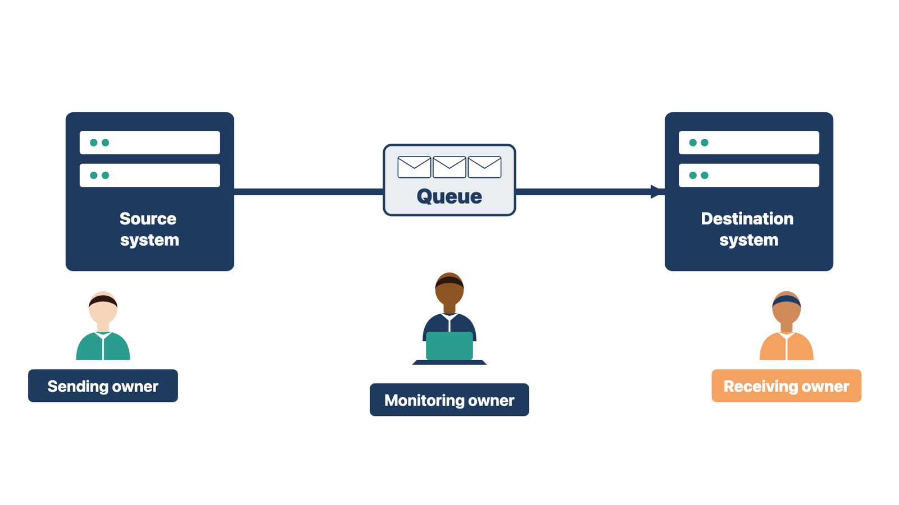
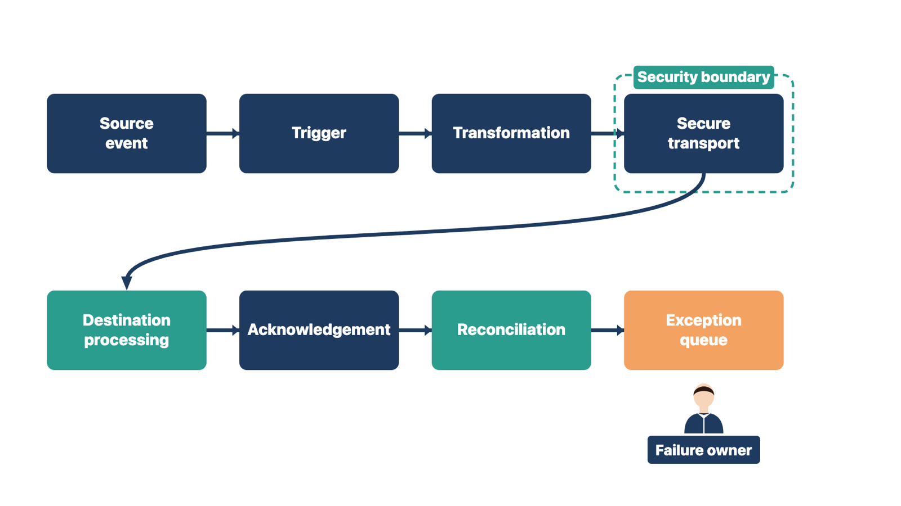

An unlisted integration has no owner, no test, and no one watching it after go-live. It fails quietly, and the clinic finds out from an angry patient or a missing payment.
An integration lets two systems or services exchange information or actions. Configuration shapes the purchased system around approved workflows. Both make a project valuable. Both can also spread errors at scale if no one owns them.
An integration is not just "connected" or "not connected." It is a shared workflow. It has two or more endpoints (the systems at each end). It also has transport, meaning, security, timing, failure handling, and human owners.

For each integration, record these facts in the integration inventory:
Ask whether the clinic sends data to public health. Two examples are the state immunization registry and electronic case reporting of certain diseases. Each one is a separate integration. Each has its own registration and its own testing.
Rule: If no one owns the receiving end, the integration is not ready, even when a test message moves.
Compare two cases. At a family practice, lab results reach the electronic health record (EHR), but no one at the clinic owns the unmatched-results queue. Results pile up unseen. At a pediatric clinic, immunizations flow to the state registry, but no one owns the registry's error report. Rejected shots never reach the registry. In both cases, the data moved, but no person owned what happened at the receiving end.
Check yourself
Privacy, security, clinical, and technical reviewers each see a different part of an integration. A shared drawing lets them discuss the same flow and spot the gap no one owns.
Draw one simple diagram per integration. Follow the item from start to finish:
source event → trigger → transformation → secure transport → destination processing → acknowledgement → reconciliation → exception queue

An exception queue is a work list that holds items that failed or need a person to review them.
Label these parts on the drawing:
A connector's sales description is not a project data-flow record. It shows what the product can do. Your diagram shows what this clinic's flow will do and who acts when it fails.
Rule: Every data-flow diagram names the person who owns the failure branch.
Compare two cases. At Cedar Point, the lab diagram ends at "exception queue," but no name sits beside it. You ask the clinic to name an owner before you call the diagram done. At a pediatric clinic, the registry diagram shows rejected immunizations returning to the clinic. You add the nurse who works the registry's error report. In both cases, the drawing is finished only when a person owns the failure branch.
Check yourself
Many integrations are late because of a contract or an account, not because of code. These items depend on outside people, so they need dates early.
Common dependencies include:
Put each one in the roadmap's dependency record. Give it a provider, a receiver, a need date, the effect of delay, and an escalation path.
Give every user an account of their own. Each person who will use the system needs their own log-in with the approved role from the Module 4 design. Shared log-ins hide who did what and break the audit trail. Account creation depends on the client's user list and its information technology (IT) owner, so track it as a dependency with a date. In Module 11, every user signs in with their own account before go-live.
Keep secrets in the approved credential system. Secrets include passwords, tokens, certificates, and production keys. Never place them in email, meeting notes, screenshots, test logs, or course work. If a vendor sends you a key by email, store it in the approved system and tell the client's security owner. The security owner decides whether to replace the key.
Rule: A secret lives only in the approved credential system, and the log records where it is stored, not what it is.
Compare two cases. A vendor emails a production key and asks you to paste it into the shared test log. A clinic manager writes a temporary password on a sticky note for a new nurse. Different people, same problem: a secret left the approved system and anyone nearby can now use it.
Check yourself
A prescriber who is not set up cannot send a controlled-substance prescription electronically on day one. The setup is done person by person, it depends on outside companies, and it can take weeks.
Electronic prescribing of controlled substances (EPCS) means sending prescriptions for drugs such as opioids electronically. The Drug Enforcement Administration (DEA), the federal agency that regulates controlled substances, sets the rules. Under DEA rules, EPCS is allowed but not required. Some state rules may differ. The clinic's compliance owner confirms whether EPCS is required for its prescribers.
Before any prescriber signs a controlled-substance prescription electronically, DEA rules require four things.
Keep a prescriber readiness tracker with one row per prescriber. Use columns for the audit report received, identity proofing, credential issued, and access approved. Add a need date for each. Log any gap as a dependency in the dependency record.
You track; you do not complete. The prescriber and the clinic do the proofing and hold the credentials. You never hold a prescriber's token or password, and you never act as the second approver.
Rule: Track each prescriber's identity proofing, two-factor credential, and access approval by date, but let the prescriber and clinic do the work.
Compare two cases. At an internal medicine clinic, one physician has finished identity proofing, but no second registrant has approved the access list. At a family practice, the access list is approved, but a new nurse practitioner has not started proofing. In both cases, one missing step stops controlled-substance prescriptions for that person. The tracker shows the gap weeks ahead.
Check yourself